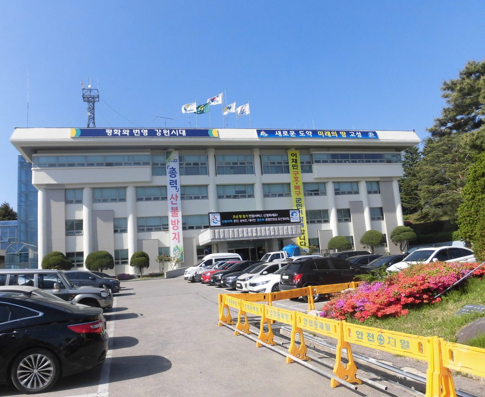

멈췄던 강원 고성 흘리 풍력, 군 30%·주민 20% 지분 SPC 세워 '주민주도형'으로 다시 추진

간성읍 흘리 10만9,776㎡에 7MW급 발전기 7기, 사업비 약 1,500억 원…지난달 도 도시계획위원회 심의 등 행정절차 들어가, SPC는 앞으로 세울 계획이고 송전선로가 남은 과제
강원 고성군이 한동안 멈춰 있던 간성읍 흘리 풍력발전소 조성 사업을 군과 주민이 지분을 나눠 갖는 '주민주도형' 사업으로 다시 추진한다. 군에 따르면 사업은 흘리 산1-83번지 일원 10만9,776㎡ 부지에 7MW급 발전기 7기를 세우는 것으로, 사업비는 약 1,500억 원이 들고 준공 뒤 약 20년 동안 운영한다. 군은 2023년 9월 산업통상자원부에 발전사업허가를 진행했고, 올해 들어 개발행위허가 신청과 재해영향평가·소규모 환경영향평가 협의를 마친 데 이어 지난달 도 도시계획위원회 심의 등 추가 행정절차에 들어갔다. 군은 앞으로 특수목적법인(SPC)을 세워 고성군이 30%, 주민이 20%의 지분으로 참여하게 해 재생에너지 수익을 주민 소득으로 잇겠다는 구상이며, 인공지능(AI) 데이터센터 등으로 늘어날 전력 수요에 맞춰 영북지역 청정에너지 생산의 한 축을 맡겠다고 밝혔다. 군 관계자는 송전선로 등 남은 문제를 풀어 "청정에너지의 전략적 가치를 지역 주민들의 소득과 연결"하겠다고 말했다. SPC는 아직 세워지지 않았고, 나머지 지분을 누가 갖는지와 주민 지분의 참여 방식·대상 범위는 밝혀지지 않았다.
시민에너지 관점
독일 메클렌부르크포어포메른주는 2016년 법을 만들어 새 풍력단지 사업자가 사업회사 지분의 20% 이상을 인근 주민과 지자체에 내놓도록 했다. 군이 30%를 갖는 구조를 두고 지자체가 사업 위험을 떠안는다는 우려가 있을 수 있지만, 허가와 주민 설득을 맡는 공공이 지분으로 들어가면 개발이익이 외지 자본으로 빠져나가지 않고 군 재정과 주민 소득으로 남는다. 다만 주민 20%가 실제 주민의 출자로 채워지려면 투자 여력이 적은 주민도 들어올 수 있는 소액 출자 통로와 공공 융자가 함께 마련돼야 한다. 고성군은 SPC를 세우기 전에 주민 지분의 참여 방식과 대상, 나머지 지분의 주인을 주민에게 먼저 공개하고 의견을 들어야 한다.
출처: 강원일보 2026-11-02 김천열 원문 보기
止まっていた江原道高城・屹里の風力、郡30%・住民20%出資のSPCを設立し「住民主導型」で再推進
杆城邑屹里の10万9,776㎡に7MW級発電機7基、事業費約1,500億ウォン…先月から道都市計画委員会の審議など行政手続きへ、SPCは今後設立予定で送電線が残る課題
江原道高城郡が、しばらく止まっていた杆城邑屹里（フルリ）の風力発電所建設事業を、郡と住民が持分を分け合う「住民主導型」事業として再び推進する。郡によると、事業は屹里山1-83番地一帯の10万9,776㎡の敷地に7MW級の発電機7基を建てるもので、事業費は約1,500億ウォン、竣工後約20年間運営する。郡は2023年9月に産業通商資源部へ発電事業許可を進め、今年に入って開発行為許可の申請、災害影響評価・小規模環境影響評価の協議を終えたのに続き、先月には道都市計画委員会の審議など追加の行政手続きに入った。郡は今後、特別目的会社（SPC）を設立して高城郡が30%、住民が20%の持分で参加し、再生可能エネルギーの収益を住民の所得につなげる構想で、AIデータセンターなどで増える電力需要に合わせ、嶺北地域のクリーンエネルギー生産の一翼を担うとしている。郡の関係者は、送電線などの残る問題を解決し「クリーンエネルギーの戦略的価値を地域住民の所得と結びつける」と述べた。SPCはまだ設立されておらず、残りの持分を誰が持つのか、住民持分の参加方式や対象範囲は明らかになっていない。
市民エネルギーの視点
ドイツのメクレンブルク・フォアポンメルン州は2016年に法律をつくり、新しい風力発電所の事業者に事業会社の持分の20%以上を近隣住民と自治体に提供するよう義務づけた。郡が30%を持つ仕組みには自治体が事業リスクを抱えるとの懸念もありうるが、許可や住民の説得を担う公共が持分で加われば、開発利益が外部資本に流れ出ず、郡の財政と住民の所得として残る。ただし住民20%が実際に住民の出資で埋まるには、投資余力の少ない住民も参加できる少額出資の窓口と公的融資をあわせて用意する必要がある。高城郡はSPCを設立する前に、住民持分の参加方式と対象、残りの持分の持ち主をまず住民に公開し、意見を聞くべきだ。
出典: 江原日報 2026-11-02 キム・チョンヨル 原文を読む
停滞的江原道高城屹里风电重启，拟设县政府持股30%、居民持股20%的SPC推进"居民主导型"项目
在杆城邑屹里10万9,776平方米土地上建设7台7MW级风机，总投资约1,500亿韩元…上月进入道城市规划委员会审议等行政程序，SPC尚待设立，输电线路仍是待解难题
江原道高城郡将把一度停滞的杆城邑屹里风电场建设项目，改为由郡政府和居民分持股份的"居民主导型"项目重新推进。据郡政府介绍，该项目计划在屹里山1-83番地一带10万9,776平方米的土地上建设7台7MW级风机，总投资约1,500亿韩元，竣工后运营约20年。郡政府于2023年9月向产业通商资源部推进发电事业许可，今年以来完成了开发行为许可申请以及灾害影响评价、小规模环境影响评价协商，上月又进入道城市规划委员会审议等后续行政程序。郡政府计划今后设立特殊目的法人（SPC），由高城郡持股30%、居民持股20%，把可再生能源收益转化为居民收入，并表示将配合人工智能数据中心等带来的用电需求增长，承担岭北地区清洁能源生产的一翼。郡政府相关人士表示，将解决输电线路等遗留问题，"把清洁能源的战略价值与当地居民的收入连接起来"。SPC目前尚未设立，其余股份由谁持有、居民股份的参与方式和对象范围均未公开。
市民能源视角
德国梅克伦堡-前波美拉尼亚州2016年立法，要求新建风电场的开发商把项目公司至少20%的股份提供给周边居民和地方政府。有人可能担心郡政府持股30%会让地方承担项目风险，但负责审批和说服居民的公共部门以股东身份参与，开发收益就不会流向外地资本，而是留在郡财政和居民收入中。不过，要让20%的居民股份真正由居民出资填满，还需同时提供让投资能力有限的居民也能加入的小额出资渠道和公共贷款。高城郡在设立SPC之前，应先向居民公开居民股份的参与方式和对象、其余股份的持有人，并听取意见。
来源: 江原日报 2026-11-02 金千烈 查看原文
Stalled Heulli wind project in Goseong, Gangwon, revived as 'resident-led' scheme with county taking 30% and residents 20% of a planned SPC
Seven 7MW-class turbines on 109,776㎡ in Heulli, Ganseong-eup, costing about 150 billion won; provincial urban planning review and other procedures began last month, the SPC has yet to be set up and transmission lines remain an obstacle
Goseong County in Gangwon Province is reviving a wind power project in Heulli, Ganseong-eup, that had been at a standstill, recasting it as a "resident-led" venture in which the county and residents share ownership. According to the county, the project would place seven 7MW-class turbines on a 109,776-square-metre site around San 1-83 in Heulli at a cost of about 150 billion won, and run for about 20 years after completion. The county pursued a generation business licence with the Ministry of Trade, Industry and Energy in September 2023, completed a development permit application and consultations on disaster impact and small-scale environmental impact assessments this year, and last month began further procedures including review by the provincial urban planning committee. It plans to set up a special purpose company (SPC) in which the county would hold 30% and residents 20%, turning renewable revenue into income for residents, and says the project would help the Yeongbuk area supply clean energy for demand expected to grow with AI data centres. A county official said it would resolve remaining issues such as transmission lines and "link the strategic value of clean energy to local residents' income." The SPC has not yet been established, and it has not been disclosed who would hold the remaining shares or how and which residents would take part.
Citizen Energy View
The German state of Mecklenburg-Vorpommern passed a law in 2016 requiring developers of new wind farms to offer at least 20% of the project company to nearby residents and municipalities. Some may worry that a 30% county stake leaves local government carrying project risk, but when the public body that handles permits and wins residents' consent comes in as a shareholder, development profits stay in county finances and residents' pockets instead of leaving with outside capital. For the residents' 20% to be filled by residents' own money, though, small-scale investment channels and public loans must be offered so that people with little to invest can join. Before setting up the SPC, Goseong County should first tell residents how their stake will work, who is eligible and who will own the rest, and hear their views.
Source: Kangwon Ilbo 2026-11-02 Kim Cheon-yeol Read the original